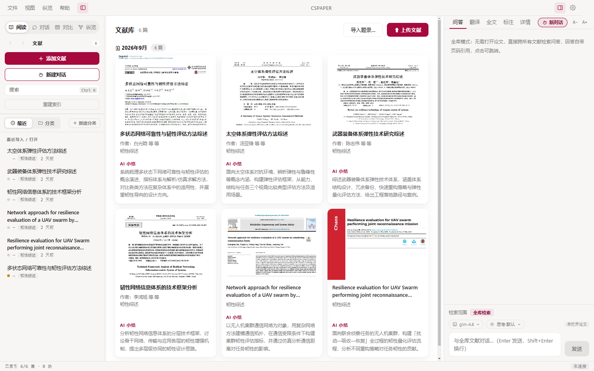
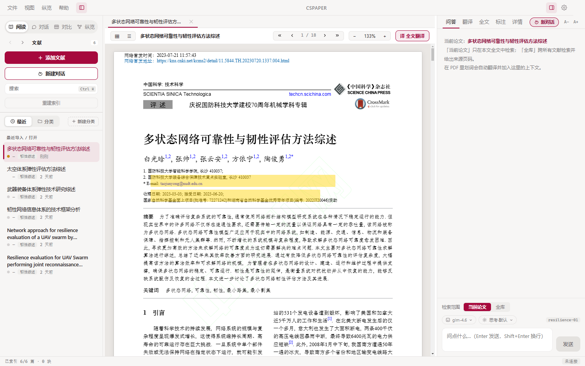
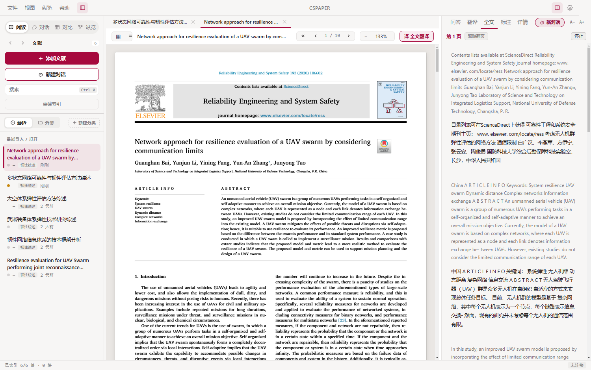
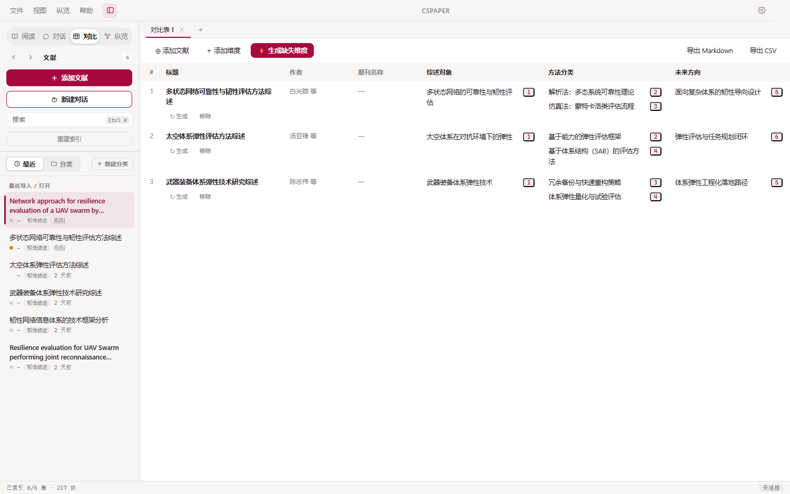
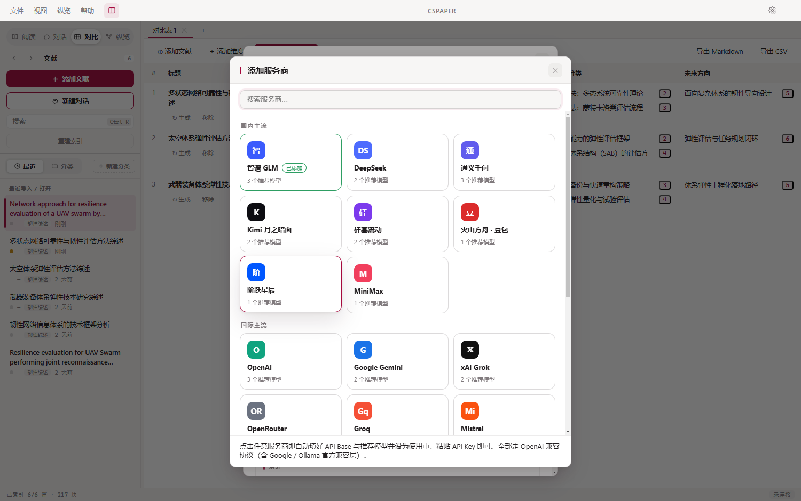

划词翻译 · 论文问答 · 全库对话 · AI 对比表格 · 知识网络 · 移动端阅读。 开源免费，数据全部保存在本机，支持任意大模型——甚至不配 Key 也能用。

从收藏、阅读、翻译，到问答、对比、写作插引文——围绕文献库的每一步都有 AI 帮忙。
按月分组的封面卡片视图，PDF 首页缩略图一览无余；一键生成 150 字 AI 小结，点卡片查看详情（信息 / 摘要 / 笔记 / 附件）。
v0.4选中即译，大模型结合当前页做术语消歧（bond wire → 键合线）；不配 Key 也能走免费通道翻译。
开箱即用当前页按段落切成中英双语对照，逐段流式翻译，支持「跟随翻页」自动连译。
v0.4整篇精读提问或跨全库检索对话（本地向量 + BM25 混合），回答带页码引用角标，点击跳回原文高亮验证。
RAG多篇文献按维度横向对比：基础字段直接提取，分析维度由 AI 读原文提取要点，每条附页码出处；可自定义维度，导出 Markdown / CSV。
v0.4Zotero 式文献总表（排序 / 展开详情），知识网络图谱按分类与同作者关系自动连线，研究脉络一目了然。
v0.5Chrome / Edge 装上 Connector，arXiv、期刊页、PDF 链接右键一键保存，PDF 自动下载入库、题录自动识别。
extension/桌面端一键导出 .cspack 数据包，手机 APK 打开即读；手机上的划词批注可合并回电脑。
android-app/检索文献库，光标处插 [n] 引用，文末一键生成 GB/T 7714-2015 参考文献列表；支持 BibTeX 导出。
word-addon/Zotero 文献库一键迁移（Zotero 开着也能读）；知网批量导出的 RIS / EndNote 题录直接入库成可检索的题录页。
中文生态深浅双主题、键盘优先、为长时间阅读设计的现代界面。




安装包由 GitHub Actions 自动构建；或克隆仓库自行构建（Electron + Vite）。